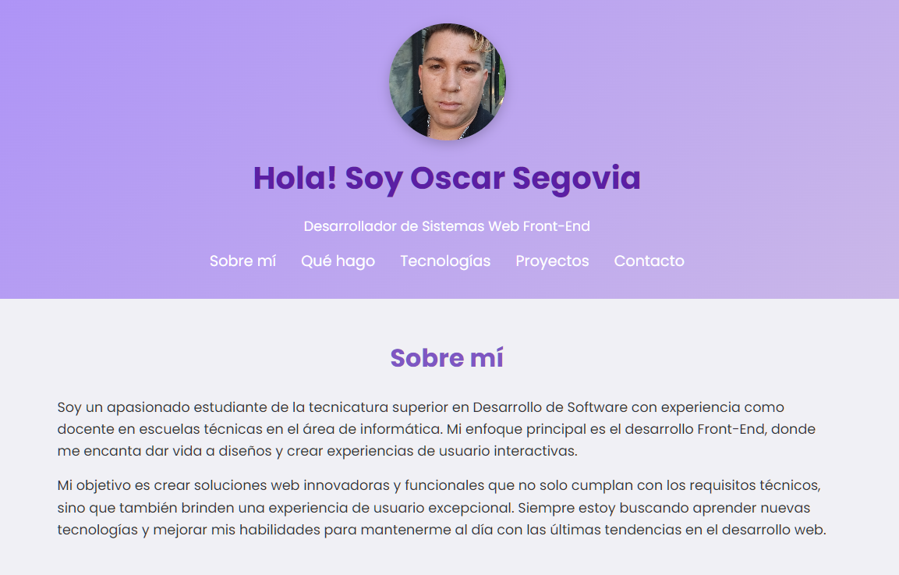

Detalles del Proyecto
En esta iteración de mi portafolio, me enfoqué en la integración de JavaScript para añadir interactividad y animaciones. Implementé el desplazamiento suave, una validación de formulario robusta y animaciones de aparición al hacer scroll, lo que eleva la experiencia del usuario.
También se realizaron ajustes finos en el diseño responsivo y se optimizó el rendimiento. Este proyecto es un testimonio de mi crecimiento en el desarrollo Front-End, combinando estética con funcionalidad avanzada.
Tecnologías Utilizadas:
- HTML5: Estructura semántica avanzada.
- CSS3: Diseño responsivo, animaciones y transiciones.
- JavaScript: Desplazamiento suave, validación de formulario, animaciones en scroll (Intersection Observer API).